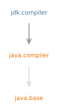

模块 jdk.compiler
The com.sun.source.* packages provide the Compiler Tree API:
an API for accessing the abstract trees (ASTs) representing Java source code
and documentation comments, used by javac, javadoc and related tools.
javac
This module provides the equivalent of command-line access to javac
via the ToolProvider and
Tool service provider interfaces (SPIs),
and more flexible access via the JavaCompiler
SPI.
Instances of the tools can be obtained by calling
ToolProvider.findFirst
or the service loader with the name
"javac".
In addition, instances of JavaCompiler.CompilationTask
obtained from JavaCompiler can be
downcast to JavacTask for access to
lower level aspects of javac, such as the
Abstract Syntax Tree (AST).
This module uses the FileSystemProvider API to locate file system providers. In particular,
this means that a jar file system provider, such as that in the
jdk.zipfs module, must be available if the compiler is to be able
to read JAR files.
Options and Environment Variables
The full set of options and environment variables supported by javac is given in the javac Tool Guide. However, there are some restrictions when the compiler is invoked through its API.The
-Joption is not supported. Any necessary VM options must be set in the VM used to invoke the API.IllegalArgumentExceptionwill be thrown if the option is used when invoking the tool through theJavaCompilerAPI; an error will be reported if the option is used when invoking javac through theToolProvideror legacyMainAPI.The "classpath wildcard" feature is not supported. The feature is only supported by the native launcher. When invoking the tool through its API, all necessary jar files should be included directly in the
--class-pathoption, or theCLASSPATHenvironment variable. When invoking the tool through its API, all components of the class path will be taken literally, and will be ignored if there is no matching directory or file. The-Xlint:pathsoption can be used to generate warnings about missing components.
JavaCompiler interface.
Argument files (so-called @-files) are not supported. The content of any such files should be included directly in the list of options provided when invoking the tool though this API.
IllegalArgumentExceptionwill be thrown if the option is used when invoking the tool through this API.The environment variable
JDK_JAVAC_OPTIONSis not supported. Any options defined in the environment variable should be included directly in the list of options provided when invoking the API; any values in the environment variable will be ignored.Options that are just used to obtain information (such as
--help,--help-extended,--versionand--full-version) are not supported.IllegalArgumentExceptionwill be thrown if any of these options are used when invoking the tool through this API.- Path-related options depend on the file manager being used
when calling
JavaCompiler.getTask(Writer, JavaFileManager, DiagnosticListener, Iterable, Iterable, Iterable). The "standard" options, such as--class-path,--module-path, and so on are available when using the default file manager, or one derived from it. These options may not be available and different options may be available, when using a different file manager.IllegalArgumentExceptionwill be thrown if any option that is unknown to the tool or the file manager is used when invoking the tool through this API.
CLASSPATH environment variable is honored
when invoking the compiler through its API, although such use is discouraged.
An environment variable cannot be unset once a VM has been started,
and so it is recommended to ensure that the environment variable is not set
when starting a VM that will be used to invoke the compiler.
However, if a value has been set, any such value can be overridden by
using the --class-path option when invoking the compiler,
or setting StandardLocation.CLASS_PATH in the file manager
when invoking the compiler through the JavaCompiler interface.
SuppressWarnings
JLS 9.6.4.5 specifies a number of strings that can be used to suppress warnings that may be generated by a Java compiler. In addition, javac also supports other strings that can be used to suppress other kinds of warnings. The following table lists all the strings that can be used with@SuppressWarnings.
| String | Suppress Warnings About ... |
|---|---|
auxiliaryclass | an auxiliary class that is hidden in a source file, and is used from other files |
cast | use of unnecessary casts |
classfile | issues related to classfile contents |
dangling-doc-comments | issues related to "dangling" documentation comments, not attached to a declaration |
deprecation | use of deprecated items |
dep-ann | items marked as deprecated in a documentation comment but not
using the @Deprecated annotation
|
divzero | division by constant integer 0
|
empty | empty statement after if
|
exports | issues regarding module exports |
fallthrough | falling through from one case of a switch statement to
the next
|
finally | finally clauses that do not terminate normally
|
identity | use of a value-based class where an identity class is expected |
incubating | use of incubating modules |
lossy-conversions | possible lossy conversions in compound assignment |
missing-explicit-ctor | missing explicit constructors in public and protected classes in exported packages |
module | module system related issues |
opens | issues regarding module opens |
overloads | issues regarding method overloads |
overrides | issues regarding method overrides |
path | invalid path elements on the command line |
preview | use of preview language features |
rawtypes | use of raw types |
removal | use of API that has been marked for removal |
restricted | use of restricted methods |
requires-automatic | use of automatic modules in the requires clauses
|
requires-transitive-automatic | automatic modules in requires transitive
|
serial | Serializable classes
that do not have a serialVersionUID field, or other
suspect declarations in Serializable and
Externalizable classes
and interfaces
|
static | accessing a static member using an instance |
strictfp | unnecessary use of the strictfp modifier
|
synchronization | synchronization attempts on instances of value-based classes;
this key is a deprecated alias for identity, which has
the same uses and effects. Users are encouraged to use the
identity category for all future and existing uses of
synchronization
|
text-blocks | inconsistent white space characters in text block indentation |
this-escape | superclass constructor leaking this before subclass initialized
|
try | issues relating to use of try blocks
(that is, try-with-resources)
|
unchecked | unchecked operations |
varargs | potentially unsafe vararg methods |
doclint:accessibility | accessibility issues found in documentation comments |
doclint:all | all issues found in documentation comments |
doclint:html | HTML issues found in documentation comments |
doclint:missing | missing items in documentation comments |
doclint:reference | reference issues found in documentation comments |
doclint:syntax | syntax issues found in documentation comments |
- 模块图:

- 工具指南:
- javac
- 自:
- 9
{kind=link}
-
包
导出包描述Provides interfaces to represent documentation comments as abstract syntax trees (AST).Provides interfaces to represent source code as abstract syntax trees (AST).Provides utilities for operations on abstract syntax trees (AST).This package provides a legacy entry point for the javac tool.间接导出 -
模块
依赖 -
服务
提供类型描述Interface to invoke Java programming language compilers from programs.Common interface for tools that can be invoked from a program.UseToolProvider.findFirst("javac")to obtain an instance of aToolProviderthat provides the equivalent of command-line access to thejavactool.使用
Java API 非官方中文翻译项目 · GitHub · 报告此页面的问题或提出改进建议 · 查看完整中文版权声明
中文翻译文本版权 © 2026 本翻译项目贡献者，以 知识共享 署名-相同方式共享 4.0 国际 (CC BY-SA 4.0) 许可证发布。原始英文内容版权归 Oracle 所有，使用受原始许可条款约束。